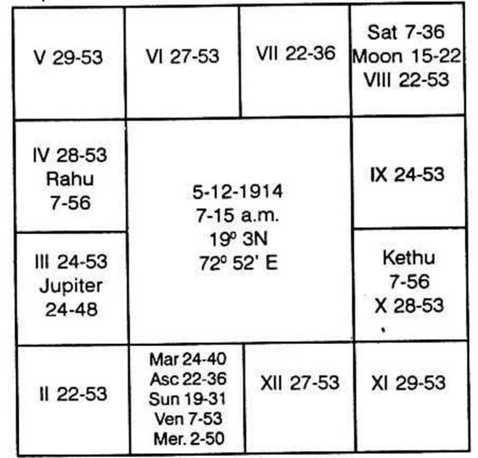

Horoscope is as follows:-

Rahu Dasa balance 6 years 3 months 2 days.
Sir,
Retirement from service shows permanently ceasing connection with the office in which you were hitherto employed and also a thorough change in one’s surroundings and environment. It includes, also change of one’s residence. This is applicable to Govt. Employees who surrender the quotens allotted to them, after retirement. Therefore, the houses to be examined are 5 and 9 ie 12 (negation) to 6 and 10, ruling service and occupation, as well as the 3rd house which is the 12th counted from 4. In your chart, 3rd house is occupied by Rahu. Saturn and Moon are posited in Rahu’s constellation. The fifth house is unoccupied. Its owner is Jupiter, and Mercury alone is in Jupiter’s constellation. The ninth house is occupied by Ketu with no other planet in its star. Thus, the significators are Saturn, Moon, Rahu, Mercury and Ketu. So in Mercury Dasa, Saturn Bhukti, and Mercury Anthra, when Sun, by transit, passes the position occupied at birth by Mercury, i.e., around 20th November, 1970, will cause your retirement.
Jupiter, whose period you are now running, happens to be lord of 2 and is deposited in the constellation ruled by Mars, lord of 1 and 6 and hence has to benefit you financially which would not otherwise be the case if you were to retire. Jupiter in the constellation of lord of 6 (service) shows continuity in that respect. In fact, it is because of Mars connection you found yourself into the Navy - Mars occupying a watery sign and owning the 6th house aspects Saturn as well as the Moon (Mars-Moon: Navy).
Further, in my experience, I have found that if two or three planets together indicate a department and also entering into service in youth, whenever their conjoined periods operate in future there will be definite improvement or change or retirement. In your case, the planets which are connected with houses 3, 5 and 9 are also connected with houses 6 and 2; because Rahu is to offer the results of the planet with which it is in conjunction or by which it is aspected. Rahu is not conjoined with any planet but it is aspected by Mars who, by virtue of its governance over the 6th house, denotes monetary gains as a result of service in departments connected with Army, Navy, Air Force, Police, etc. Rahu thus gains strength to indicate the 6th house results also. I am sure that, as in the case of many other people, the three planets - Saturn, Mercury and Moon which saw you entering service on 21-5-1941, will, in their conjoined period again (Saturn Bhukti, Mercury Dasa), indicate retirement.
In traditional astrology, the rule is that planets which are in shasthashtama (quincunx or 150 degree aspect according to Western astrology) to each other, i.e., in 6 and 8 to each other, cannot offer desirable results whenever their conjoined periods operate. Actually, you entered service and also got married only when you were running Saturn Dasa, Mercury Bhukti, - the two planets which are in 6 and 8 to each other. Again, you were confirmed in the Commission when you run the bhukti of Venus which was in 6 to dasanatha Saturn. Another planet, Sun which is also in 6 to Saturn offered, in its bhukti, a voyage to a foreign country at the end of 1947. Also the same Sun’s period, before it ended, saw your promotion. Again, in traditional astrology, planets in the 8th house threaten untold miseries, but actually Saturn and Moon in 8 to your lagna which operated when you entered the Navy, again caused another promotion in December 1948 (Saturn Dasa, Moon Bhukti, Saturn Anthra). Has traditional astrology been helpful in explaining your events? You enjoyed diametrically opposite results.
Since Mercury Dasa, Saturn Bhukti and Mercury Anthra is the period of retirement and Mercury is the lord of 8 and 11 houses, it shows that when one retires during Mercury Anthra one will have his accounts settled quickly and will get his accumulated provident fund, etc. no sooner after retirement date. (Mercury is a speedy planet and connected with accounts, etc.) In many cases, people having accumulated arrears during Saturn sub period have their arrears received or entangled money obtaining during Mercury sub period.